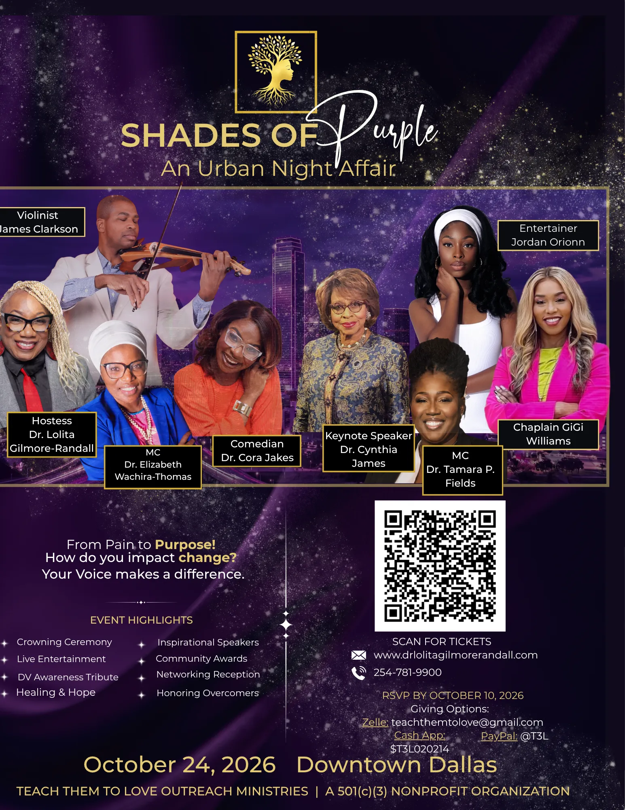

Our mission
To heal the broken, restore the forgotten, and transform generations through trauma-informed care, faith-rooted advocacy, education, and community engagement.
Teach Them To Love Outreach Ministries
Faith-rooted, trauma-informed community wellness support for individuals and families ready to heal, rebuild, and thrive.
Welcome to T3L Outreach
Teach Them To Love Outreach Ministries is a faith-rooted, trauma-informed community wellness organization dedicated to helping individuals and families navigate trauma, domestic violence, mental-health challenges, and significant life transitions.
Founded by Dr. Lolita R. Gilmore-Randall, T3L brings together advocacy, education, compassionate support, and community connection so people can move toward lasting transformation. Call us to confirm the support that is currently available and the next step that fits your needs.
Every person deserves hope, every family deserves healing, and every community deserves the opportunity to thrive.
Our mission
To heal the broken, restore the forgotten, and transform generations through trauma-informed care, faith-rooted advocacy, education, and community engagement.
Our vision
Thriving communities where survivors become leaders, families are restored, and healing becomes a catalyst for transformation.
Organization details
Practical information for individuals, families, partners, and community supporters seeking to connect with T3L Outreach.
| Founder | Dr. Lolita R. Gilmore-Randall |
|---|---|
| Organization | Registered 501(c)(3) nonprofit; EIN 46-4850870 |
| Address | 601 Quail Valley Drive, Georgetown, TX 78626 |
| Phone | 512-649-2693 |
| Hours | Monday–Friday, 8:00 a.m.–8:00 p.m.; Saturday, 9:00 a.m.–12:00 p.m.; Sunday, closed |
| Support areas | Family reunification, counseling support, pastoral care, advocacy, education, and community connection. |
Programs and support
T3L offers compassionate pathways to healing through trauma-informed support, education, advocacy, and community connection. Contact us directly to discuss current availability and appropriate next steps.
01
Support for families seeking to rebuild foundations of safety, respect, understanding, and individuality through family-centered care and connection.
Ask about family reunification support →02
A trauma-informed approach to helping individuals and families navigate mental-health challenges, relationships, domestic violence, and substance-use concerns.
Ask about counseling support →03
Faith-rooted support for significant life moments, including grief, spiritual direction, family transitions, and community connection.
Ask about pastoral care →Start here
We want people to know what to expect. Call T3L to discuss your needs, confirm availability, and identify the most appropriate path forward.
Start with a conversation at 512-649-2693. We will help clarify the available next step.
Let us know whether you are seeking family reunification, counseling support, pastoral care, advocacy, education, or community connection.
T3L will confirm current availability and, where needed, help identify an appropriate community or emergency referral pathway.
Leadership
Doctor of Ministry, Licensed Clinical Social Worker, Licensed Chemical Dependency Counselor, retired U.S. Army Veteran, speaker, researcher, and community advocate.
Her life’s work has focused on helping individuals and families heal from trauma, overcome adversity, and discover purpose. Through her leadership, T3L Outreach brings education, advocacy, and compassionate support to communities across Texas and beyond.
“Healing individuals is important. Healing families is transformational. Healing communities changes generations.”

Upcoming event
Join T3L for an evening of awareness, community, and support for the mission to move from pain to purpose.
October 24, 2026
4:00 p.m. Central Time
Please confirm the current venue, ticket details, and accessibility information before making plans.
Make an impact
Your generosity helps T3L sustain compassionate, community-centered support for individuals and families.
01
Make a secure PayPal donation to Teach Them To Love Outreach.
Give with PayPal →02
Make a secure Cash App contribution to T3L Outreach.
Give with Cash App →Helpful information
Answers to common questions about contacting T3L and finding the right support pathway.
T3L provides family reunification support, trauma-informed counseling support, pastoral care, advocacy, education, and community connection. Call T3L to confirm current availability and the right next step.
T3L is located at 601 Quail Valley Drive, Georgetown, TX 78626. Call 512-649-2693 to confirm current hours and access information before visiting.
Call 911 if you are in immediate danger. For immediate domestic violence support, call the National Domestic Violence Hotline at 800-799-7233 or text START to 88788.
You can support T3L through a secure online donation, by attending a current event, or by connecting with the organization about partnership and community opportunities.
Visit and connect
Call to discuss current service availability, community partnership opportunities, or the appropriate next step for your needs.
601 Quail Valley Drive
Georgetown, TX 78626
| Monday–Friday | 8:00 a.m.–8:00 p.m. |
|---|---|
| Saturday | 9:00 a.m.–12:00 p.m. |
| Sunday | Closed |